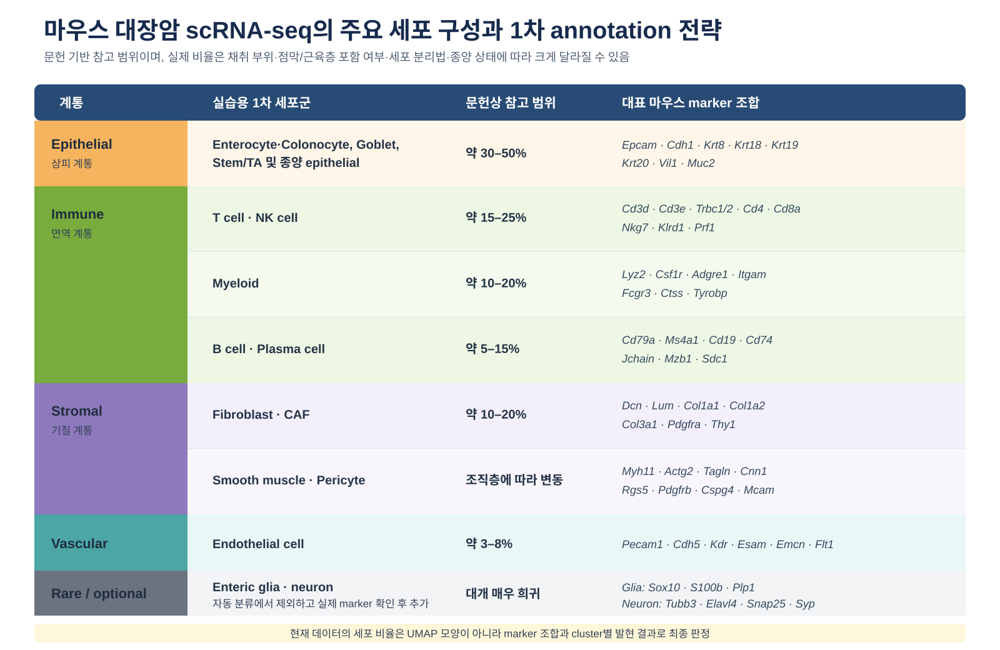
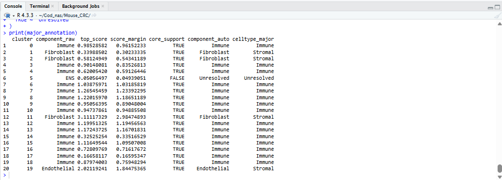
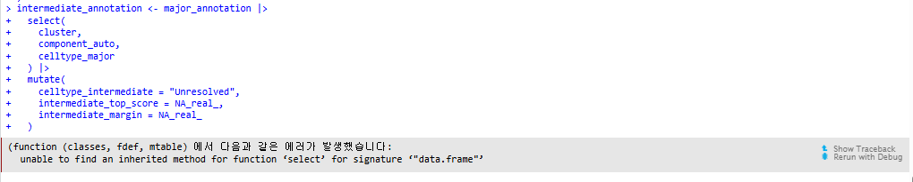
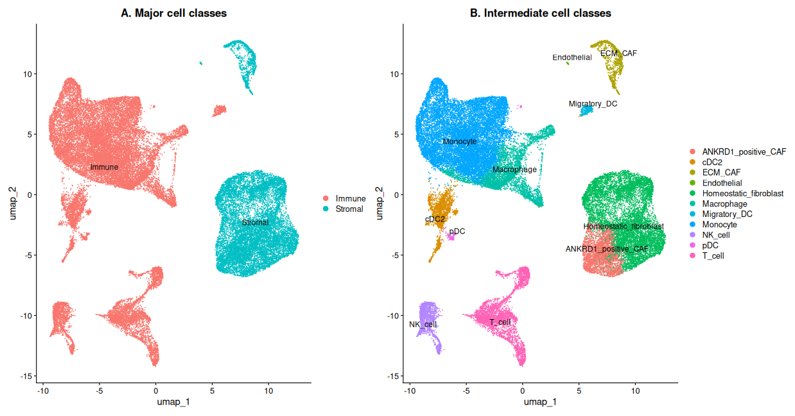

Cell Type Annotation
Step 06 / 08Resolution 0.5에서 생성된 20개 cluster의 marker gene을 확인하고, 마우스 대장 조직의 세포 구성을 기준으로 대분류 → 중분류 → 소분류 순서로 biological identity를 부여합니다.
A) 고임팩트 장 조직 atlas에서 사용하는 계층적 annotation
대규모 single-cell atlas는 모든 cluster에 세부 이름을 한 번에 붙이지 않습니다. 먼저 epithelial, immune, stromal/mesenchymal, endothelial, neural과 같은 major lineage를 판정하고, 각 lineage를 다시 subclustering하여 세부 cell type과 state를 구분합니다. 이번 실습도 이 구조를 그대로 따릅니다.
| 대표 논문 | 그림에서 확인할 내용 | 실습에 적용할 개념 |
|---|---|---|
| Nature (2021) Cells of the human intestinal tract mapped across space and time |
Figure 1b의 major lineage와 Extended Data Figure 2a의 lineage별 세부 유형 | 전체 세포 → major lineage → 133 cell types/states |
| Cell (2019) Intra- and Inter-cellular Rewiring of the Human Colon during Ulcerative Colitis |
사람 대장의 epithelial, stromal, immune compartment와 51개 subset | 대장 조직의 대분류 및 중·소분류 예시 |
| Nature (2017) A single-cell survey of the small intestinal epithelium |
마우스 intestinal epithelial lineage와 stem/TA, absorptive, secretory subtype | Epithelial cluster를 별도로 subset하여 세분화 |
A-1) 마우스 대장 조직에는 어떤 세포가 있을까?
마우스 대장은 epithelial layer, lamina propria의 immune·stromal compartment, 혈관과 림프관, muscular layer 및 enteric nervous system으로 구성됩니다. Annotation에서는 처음부터 세부 subtype을 맞히려고 하기보다, 먼저 명확한 계통 marker를 이용해 대분류한 다음 각 계통 내부를 다시 세분화하는 것이 안정적입니다.

문헌상 참고 범위와 대표 marker를 반영한 마우스 대장암 scRNA-seq 실습용 세포 구성
논문과 동일한 Annotation의 세 단계
- 1차 분류: epithelial, T/NK, myeloid, B/plasma, fibroblast/CAF, endothelial, muscle/pericyte
- 희귀 세포: neural/glial은 자동 분류에서 제외하고 핵심 marker가 확인될 때만 추가
- 소분류: 필요한 lineage만 subset·재분석하여 T-cell subtype, epithelial subtype 또는 fibroblast state 등을 판정
- Seq-Scope spatial transcriptomics of mouse colon: epithelial, immune, fibroblast, smooth muscle 및 neural compartment
- Single-cell atlas of the aging mouse colon: mouse colonic epithelial 및 immune cell diversity
- Tabula Muris: mouse tissue cell atlas와 broad cell identity reference
B) Step 5 결과에서 이어서 시작하기
Step 5 마지막에서 resolution 0.5 cluster를 identity로 지정하고
RNA assay로 전환했습니다. 현재 객체는 기존 Assay 클래스이므로
JoinLayers()는 실행하지 않습니다.
# 저장된 cluster를 identity로 지정
Idents(integrated_obj) <- "seurat_clusters"
# marker 발현 분석은 RNA assay에서 수행
DefaultAssay(integrated_obj) <- "RNA"
# 시작 상태 확인
integrated_obj
levels(integrated_obj)
class(integrated_obj[["RNA"]])
Layers(integrated_obj[["RNA"]])
table(Idents(integrated_obj))
C) 대분류를 자동으로 mapping하기
이번 실습에서는 문헌 기반 marker set으로 lineage score를 계산하고, cluster별 평균 점수가 가장 높은 대분류를 자동 배정합니다. 자동 결과는 cluster marker와 marker plot을 이용해 검증합니다.
C-1) 대분류 marker set 준비
major_marker_list <- list(
Epithelial = c(
"Epcam", "Cdh1", "Krt8", "Krt18",
"Krt19", "Krt20", "Vil1", "Muc2"
),
T_NK = c(
"Cd3d", "Cd3e", "Trbc1", "Trbc2",
"Cd4", "Cd8a", "Nkg7", "Klrd1", "Prf1"
),
Myeloid = c(
"Lyz2", "Csf1r", "Adgre1", "Itgam",
"Fcgr3", "Ctss", "Tyrobp", "Fcer1g"
),
B_Plasma = c(
"Cd79a", "Ms4a1", "Cd19", "Cd74",
"H2-Aa", "Jchain", "Mzb1", "Sdc1"
),
Fibroblast_CAF = c(
"Col1a1", "Col1a2", "Col3a1", "Dcn",
"Lum", "Dpt", "Pdgfra", "Thy1"
),
Endothelial = c(
"Pecam1", "Cdh5", "Kdr", "Esam",
"Emcn", "Egfl7", "Flt1", "Vwf"
),
Muscle_Pericyte = c(
"Acta2", "Tagln", "Myh11", "Actg2",
"Cnn1", "Rgs5", "Pdgfrb", "Cspg4", "Mcam"
)
)
# 현재 객체에 존재하는 marker만 사용
major_marker_list <- lapply(
major_marker_list,
intersect,
y = rownames(integrated_obj)
)
lengths(major_marker_list)
stopifnot(all(lengths(major_marker_list) >= 3))
C-2) Marker score로 cluster 자동 배정
set.seed(1234)
integrated_obj <- AddModuleScore(
integrated_obj,
features = major_marker_list,
assay = "RNA",
name = "MajorScore",
seed = 1234
)
score_columns <- paste0(
"MajorScore",
seq_along(major_marker_list)
)
cluster_score <- FetchData(
integrated_obj,
vars = c("seurat_clusters", score_columns)
) |>
group_by(seurat_clusters) |>
summarise(
across(all_of(score_columns), mean),
.groups = "drop"
)
score_matrix <- as.matrix(
cluster_score[, score_columns]
)
colnames(score_matrix) <- names(major_marker_list)
rownames(score_matrix) <- cluster_score$seurat_clusters
top1_index <- max.col(
score_matrix,
ties.method = "first"
)
sorted_scores <- t(
apply(
score_matrix,
1,
sort,
decreasing = TRUE
)
)
marker_annotation <- data.frame(
cluster = rownames(score_matrix),
marker_major_raw = colnames(score_matrix)[top1_index],
top_score = sorted_scores[, 1],
score_margin = sorted_scores[, 1] - sorted_scores[, 2],
row.names = NULL
)
# 모든 cluster를 강제로 배정하지 않고 불명확한 경우 Unresolved
marker_annotation$marker_major <- ifelse(
marker_annotation$top_score > 0 &
marker_annotation$score_margin >= 0.05,
marker_annotation$marker_major_raw,
"Unresolved"
)
marker_annotation
score_margin은 1위와 2위 lineage score의 차이입니다.
최고 score가 0 이하이거나 차이가 0.05 미만이면 강제로 이름을 붙이지 않고
Unresolved로 남깁니다. 0.05는 실습용 점검 기준이며 절대적인 생물학적 기준은 아닙니다.
C-3) Neural/Glial은 희귀 세포군으로 별도 확인
rare_neural_markers <- list(
Enteric_glia = c(
"Sox10", "S100b", "Plp1",
"Slc1a3", "Fabp7", "Gfap"
),
Enteric_neuron = c(
"Tubb3", "Elavl3", "Elavl4",
"Snap25", "Syp", "Rbfox3", "Phox2b", "Ret"
)
)
rare_neural_markers <- lapply(
rare_neural_markers,
intersect,
y = rownames(integrated_obj)
)
DotPlot(
integrated_obj,
features = rare_neural_markers,
group.by = "seurat_clusters",
assay = "RNA"
) +
RotatedAxis() +
ggtitle("Optional validation of rare enteric neural cells")
Enteric glia는 Sox10–S100b–Plp1, enteric neuron은
Tubb3–Elavl4–Snap25–Syp가 함께 확인될 때만 최종 annotation에 추가합니다.
C-4) Marker 기반 1차 분류를 metadata에 자동 저장
major_cluster_map <- setNames(
marker_annotation$marker_major,
marker_annotation$cluster
)
integrated_obj$celltype_major_auto <- unname(
major_cluster_map[
as.character(integrated_obj$seurat_clusters)
]
)
table(
cluster = integrated_obj$seurat_clusters,
major = integrated_obj$celltype_major_auto
)
DimPlot(
integrated_obj,
reduction = "umap",
group.by = "celltype_major_auto",
label = TRUE,
repel = TRUE
)
C-5) 최종 대분류를 Epithelial·Immune·Stromal·Other로 정리
하단 통합 코드에서는 score margin과 core marker 검출을 함께 반영하여
major_annotation을 만든 뒤, 세부 component를 실습용 대분류로 다시 묶습니다.
major_annotation$celltype_major <- dplyr::case_when(
major_annotation$component_auto ==
"Epithelial" ~ "Epithelial",
major_annotation$component_auto ==
"Immune" ~ "Immune",
major_annotation$component_auto %in%
c(
"Fibroblast",
"Endothelial",
"Muscle_Pericyte"
) ~ "Stromal",
major_annotation$component_auto ==
"ENS" ~ "Other",
TRUE ~ "Unresolved"
)
print(major_annotation)

Cluster별 자동 component와 최종 major cell class를 확인한 결과
D) FindAllMarkers로 자동 annotation 검증
FindAllMarkers()는 자동 mapping을 수행하는 함수가 아닙니다.
자동 배정 후 각 cluster의 특징 유전자가 예상한 세포 계통과 일치하는지 검증하는 데 사용합니다.
각 cluster와 나머지 세포를 비교하여 상대적으로 높게 발현되는 유전자를 찾습니다.
세포 수가 많으므로 실습 시간을 줄이기 위해 cluster당 최대 1,000개 세포를 사용합니다.
set.seed(1234)
all_markers <- FindAllMarkers(
integrated_obj,
assay = "RNA",
only.pos = TRUE,
test.use = "wilcox",
min.pct = 0.25,
logfc.threshold = 0.25,
max.cells.per.ident = 1000,
random.seed = 1234
)
dim(all_markers)
head(all_markers)
D-1) Cluster별 상위 marker 확인
top10_markers <- all_markers |>
dplyr::group_by(cluster) |>
dplyr::slice_max(
order_by = avg_log2FC,
n = 10,
with_ties = FALSE
) |>
dplyr::ungroup()
top10_markers |>
dplyr::select(
cluster,
gene,
avg_log2FC,
pct.1,
pct.2,
p_val_adj
)
avg_log2FC가 크고 pct.1이 높으면서 pct.2가 낮은 유전자는
해당 cluster를 설명하는 데 유용합니다. 하지만 ribosomal, mitochondrial, cell-cycle 및
stress gene만 높은 경우에는 세포 정체성보다 상태 또는 QC 영향을 반영할 수 있습니다.
E) 검토한 대분류를 최종 metadata에 저장
Marker score의 자동 배정 결과를 시작값으로 사용합니다.
상위 marker와 marker plot이 자동 배정 결과와 일치하지 않는 cluster만 수정한 뒤
최종 결과를 celltype_major에 저장합니다.
# 자동 배정 결과를 최종 mapping의 시작값으로 사용
major_cluster_map <- setNames(
marker_annotation$marker_major,
marker_annotation$cluster
)
# 불일치 cluster가 있을 때만 아래와 같이 수정
# major_cluster_map["수정할_cluster"] <- "수정할_대분류"
major_cluster_map
integrated_obj$celltype_major <- unname(
major_cluster_map[
as.character(Idents(integrated_obj))
]
)
table(
cluster = integrated_obj$seurat_clusters,
major = integrated_obj$celltype_major
)
DimPlot(
integrated_obj,
reduction = "umap",
group.by = "celltype_major",
label = TRUE,
repel = TRUE
)
F) 중분류: 대분류 내부를 다시 세분화
F-1) Immune cell 중분류
immune_marker_list <- list(
T_cell = c("Cd3d", "Cd3e", "Trbc1", "Trbc2"),
NK_cell = c("Nkg7", "Klrd1", "Gzmb", "Prf1"),
B_cell = c("Ms4a1", "Cd79a", "Cd74", "H2-Aa"),
Plasma_cell = c("Jchain", "Mzb1", "Sdc1", "Xbp1"),
Myeloid = c("Lyz2", "Csf1r", "Adgre1", "Fcgr3"),
Neutrophil = c("S100a8", "S100a9", "Ly6g", "Csf3r"),
Mast_cell = c("Kit", "Cpa3", "Mcpt4", "Ms4a2")
)
DotPlot(
integrated_obj,
features = immune_marker_list,
group.by = "seurat_clusters",
assay = "RNA"
) +
RotatedAxis() +
ggtitle("Immune lineage markers")
F-2) Epithelial cell 중분류
epithelial_marker_list <- list(
Colonocyte = c("Alpi", "Krt20", "Car1", "Slc26a3"),
Goblet = c("Muc2", "Spink4", "Clca1", "Agr2"),
Stem = c("Lgr5", "Olfm4", "Smoc2", "Ascl2"),
Cycling_TA = c("Mki67", "Top2a", "Birc5", "Ccna2"),
Enteroendocrine = c("Chga", "Chgb", "Neurog3", "Pyy"),
Tuft = c("Dclk1", "Pou2f3", "Trpm5", "Gfi1b")
)
DotPlot(
integrated_obj,
features = epithelial_marker_list,
group.by = "seurat_clusters",
assay = "RNA"
) +
RotatedAxis() +
ggtitle("Epithelial lineage markers")
F-3) Stromal·vascular 중분류
stromal_marker_list <- list(
Fibroblast = c("Col1a1", "Col1a2", "Dcn", "Pdgfra"),
Myofibroblast = c("Acta2", "Tagln", "Col3a1", "Cald1"),
Smooth_muscle = c("Myh11", "Actg2", "Des", "Cnn1"),
Pericyte = c("Rgs5", "Cspg4", "Pdgfrb", "Mcam"),
Endothelial = c("Pecam1", "Cdh5", "Kdr", "Emcn"),
Lymphatic_endothelial = c("Prox1", "Lyve1", "Flt4", "Pdpn")
)
DotPlot(
integrated_obj,
features = stromal_marker_list,
group.by = "seurat_clusters",
assay = "RNA"
) +
RotatedAxis() +
ggtitle("Stromal and vascular markers")
F-4) 중분류 annotation table 생성과 namespace 충돌 방지
여러 패키지가 select()라는 같은 이름의 함수를 제공할 수 있습니다.
이때 dplyr가 아닌 다른 select()가 호출되면 data.frame에 적용할 메서드를
찾지 못했다는 오류가 발생할 수 있습니다.

다른 패키지의 select()가 호출되면서 발생한 namespace 충돌 오류 예시
intermediate_annotation <- major_annotation |>
dplyr::select(
cluster,
component_auto,
celltype_major
) |>
dplyr::mutate(
celltype_intermediate = "Unresolved",
intermediate_top_score = NA_real_,
intermediate_margin = NA_real_
)
head(intermediate_annotation)
dplyr::select()와 dplyr::mutate()처럼
package namespace를 명시하면 현재 로드 순서와 관계없이 원하는 함수를 확실하게 사용할 수 있습니다.
중분류의 핵심
전체 20개 cluster에서 모든 세부 subtype을 동시에 구분하기보다, 대분류가 확정된 cluster 안에서 해당 계통 marker를 집중적으로 확인합니다. 더 세밀한 소분류가 필요하면 immune 또는 epithelial cell만 subset하여 variable feature 선택부터 clustering까지 다시 수행합니다.
G) 자동 annotation 결과를 marker로 최종 검증
자동 score는 annotation의 시작점입니다. 최종 label은 cluster top marker, canonical marker의 조합, UMAP 위치, sample별 세포 구성까지 함께 확인해 확정합니다. 이번 데이터에서는 특히 cluster 5, 11, 19를 추가 검토했습니다.
| Cluster | 최종 label | 검증 근거 |
|---|---|---|
| 5 | ANKRD1_positive_CAF | 6개 sample에 고르게 존재하고 Dcn+ stromal 계통이며 Ankrd1이 선택적으로 높음. 전형적인 myofibroblast, pericyte, epithelial, endothelial marker는 부족 |
| 11 | ECM_CAF | Postn, Mmp3, Sfrp2/4, Lox, Cpxm1 기반 ECM-remodeling 프로그램 |
| 19 | Endothelial | Cldn5, Pecam1, Kdr, Emcn 기반 혈관내피 계통 |
ANKRD1_positive_CAF는 이 데이터에서 관찰된 특징을
반영한 설명적이고 잠정적인 명칭입니다. 이미 확립된 보편적 대장 CAF subtype으로 단정하지 않습니다.
# Top marker와 marker plot을 이용한 최종 전문가 검토
major_annotation$component_auto[
major_annotation$cluster == "5"
] <- "Fibroblast"
major_annotation$celltype_major[
major_annotation$cluster == "5"
] <- "Stromal"
intermediate_annotation$component_auto[
intermediate_annotation$cluster == "5"
] <- "Fibroblast"
intermediate_annotation$celltype_major[
intermediate_annotation$cluster == "5"
] <- "Stromal"
intermediate_annotation$celltype_intermediate[
intermediate_annotation$cluster == "5"
] <- "ANKRD1_positive_CAF"
intermediate_annotation$celltype_intermediate[
intermediate_annotation$cluster == "11"
] <- "ECM_CAF"
intermediate_annotation$celltype_intermediate[
intermediate_annotation$cluster == "19"
] <- "Endothelial"
print(intermediate_annotation)

대분류와 marker 검증을 거친 최종 중분류 결과
자동 score 결과를 그대로 사용하지 않고 top marker, canonical marker 조합, UMAP 위치와
sample 분포를 추가 검토했기 때문입니다. Cluster 5는 설명적 명칭인
ANKRD1_positive_CAF, cluster 11은 ECM_CAF, cluster 19는
Endothelial로 수정하는 것이 현재 결과와 일치합니다.
대분류에서는 fibroblast와 endothelial을 모두 Stromal로 묶고,
중분류에서 서로 구분하므로 두 패널의 표기가 다른 것은 정상입니다.
H) 각 세포형의 대표 marker 발현 확인
DimPlot()은 cell type처럼 범주형 metadata를 표시하고,
유전자 발현량은 FeaturePlot()으로 확인합니다.
DotPlot()은 평균 발현량과 발현 세포 비율을 동시에 비교할 때 유용합니다.
representative_markers <- c(
"Lyz2", # Monocyte/myeloid
"C1qc", # Macrophage
"Cd209a", # cDC2
"Ccr7", # Migratory DC
"Siglech", # pDC
"Cd3e", # T cell
"Ncr1", # NK cell
"Dcn", # Fibroblast
"Ankrd1", # ANKRD1-positive CAF
"Postn", # ECM-CAF
"Cldn5" # Endothelial
)
representative_markers <- intersect(
representative_markers,
rownames(integrated_obj)
)
FeaturePlot(
integrated_obj,
features = representative_markers,
reduction = "umap",
order = TRUE,
min.cutoff = "q05",
max.cutoff = "q95",
ncol = 4
)
DotPlot(
integrated_obj,
features = representative_markers,
group.by = "celltype_intermediate",
assay = "RNA"
) +
RotatedAxis() +
ggtitle("Representative marker validation")H-1) Cluster 5 marker 검증 예시

Cluster 5는 Dcn과 Ankrd1을 보이지만 canonical myofibroblast, pericyte,
epithelial 및 endothelial marker는 뚜렷하지 않아
ANKRD1_positive_CAF라는 설명적 명칭을 사용합니다.
I) 실습용 전체 코드
전체 R 스크립트에는 기존의 계층형 marker score 계산, 검출률과 score margin 기준, 희귀 neural/glial 검증, 5·11·19번 최종 보정 및 대표 marker 시각화가 한 번에 실행되도록 정리되어 있습니다.
실습용 통합 코드 실행 순서
- Step 5에서 생성하거나 불러온
integrated_obj가 있는지 확인합니다. - 아래 전체 코드를 한 번에 복사하여 새로운 R script에서 실행합니다.
major_annotation과intermediate_annotation을 확인합니다.- 대표 marker plot을 검토한 뒤 Step 7에서 사용할 객체만 남깁니다.
# ============================================================
# Step 6. Mouse colon scRNA-seq hierarchical annotation
# 대분류: Epithelial / Immune / Stromal / Other
# 중분류까지만 수행
# 시작 객체: integrated_obj
# ============================================================
set.seed(1234)
Idents(integrated_obj) <- "seurat_clusters"
DefaultAssay(integrated_obj) <- "RNA"
# ============================================================
# 1. 공통 함수
# ============================================================
# Signature별 AddModuleScore를 계산하고 cluster 평균으로 요약
calculate_cluster_scores <- function(
object,
signatures,
score_prefix
) {
signatures <- lapply(
signatures,
intersect,
y = rownames(object)
)
if (any(lengths(signatures) < 3)) {
stop(
"3개 미만의 marker만 남은 signature가 있습니다: ",
paste(
names(signatures)[lengths(signatures) < 3],
collapse = ", "
)
)
}
object <- AddModuleScore(
object,
features = signatures,
assay = "RNA",
name = score_prefix,
seed = 1234
)
score_columns <- paste0(
score_prefix,
seq_along(signatures)
)
cluster_score_df <- FetchData(
object,
vars = c("seurat_clusters", score_columns)
) |>
group_by(seurat_clusters) |>
summarise(
across(all_of(score_columns), mean),
.groups = "drop"
)
score_matrix <- as.matrix(
cluster_score_df[, score_columns]
)
rownames(score_matrix) <-
as.character(cluster_score_df$seurat_clusters)
colnames(score_matrix) <- names(signatures)
list(
object = object,
signatures = signatures,
score_matrix = score_matrix
)
}
# Cluster별 core marker 검출 비율 계산
calculate_detection_fraction <- function(
object,
marker_union
) {
marker_union <- intersect(
unique(marker_union),
rownames(object)
)
detection_df <- FetchData(
object,
vars = c("seurat_clusters", marker_union)
) |>
group_by(seurat_clusters) |>
summarise(
across(
all_of(marker_union),
~ mean(.x > 0)
),
.groups = "drop"
)
detection_matrix <- as.matrix(
detection_df[, marker_union]
)
rownames(detection_matrix) <-
as.character(detection_df$seurat_clusters)
detection_matrix
}
# ============================================================
# 2. 대분류용 signature
# ============================================================
# Stromal은 내부 이질성이 크므로 fibroblast, endothelial,
# muscle/pericyte score를 따로 계산한 뒤 대분류에서 Stromal로 통합
major_component_markers <- list(
Epithelial = c(
"Epcam", "Cdh1", "Krt8", "Krt18",
"Krt19", "Krt20", "Vil1", "Muc2"
),
Immune = c(
"Ptprc", "Cd52", "Coro1a", "Lcp1",
"Ptpn6", "Hcls1", "Fyb", "Rac2"
),
Fibroblast = c(
"Dcn", "Lum", "Col1a1", "Col1a2",
"Col3a1", "Pdgfra", "Dpt", "Col6a1"
),
Endothelial = c(
"Pecam1", "Cdh5", "Kdr", "Cldn5",
"Esam", "Emcn", "Flt1", "Robo4"
),
Muscle_Pericyte = c(
"Myh11", "Actg2", "Tagln", "Cnn1",
"Rgs5", "Pdgfrb", "Cspg4", "Mcam"
),
ENS = c(
"Sox10", "S100b", "Plp1", "Slc1a3",
"Tubb3", "Elavl4", "Snap25", "Syp"
)
)
# 각 component의 판정을 지지하는 핵심 marker
major_core_markers <- list(
Epithelial = c(
"Epcam", "Cdh1", "Krt8", "Krt18"
),
Immune = c(
"Ptprc", "Coro1a", "Lcp1", "Cd52"
),
Fibroblast = c(
"Dcn", "Lum", "Col1a1", "Col1a2"
),
Endothelial = c(
"Pecam1", "Cdh5", "Kdr", "Cldn5"
),
Muscle_Pericyte = c(
"Myh11", "Tagln", "Rgs5", "Pdgfrb"
),
ENS = c(
"Sox10", "S100b", "Plp1",
"Tubb3", "Elavl4", "Snap25"
)
)
# ============================================================
# 3. 대분류 score 계산
# ============================================================
major_result <- calculate_cluster_scores(
object = integrated_obj,
signatures = major_component_markers,
score_prefix = "MajorComponentScore"
)
integrated_obj <- major_result$object
major_score_matrix <- major_result$score_matrix
major_sorted_scores <- t(
apply(
major_score_matrix,
1,
sort,
decreasing = TRUE
)
)
major_top_index <- max.col(
major_score_matrix,
ties.method = "first"
)
major_annotation <- data.frame(
cluster = rownames(major_score_matrix),
component_raw =
colnames(major_score_matrix)[major_top_index],
top_score = major_sorted_scores[, 1],
score_margin =
major_sorted_scores[, 1] -
major_sorted_scores[, 2],
row.names = NULL
)
# ============================================================
# 4. Core marker 검출 지지 확인
# ============================================================
major_detection_matrix <- calculate_detection_fraction(
object = integrated_obj,
marker_union = unlist(
major_core_markers,
use.names = FALSE
)
)
# 일반 lineage:
# core marker 중 2개 이상이 cluster 세포의 10% 이상에서 검출
major_annotation$core_support <- vapply(
seq_len(nrow(major_annotation)),
function(i) {
cluster_id <- major_annotation$cluster[i]
component <- major_annotation$component_raw[i]
core_genes <- intersect(
major_core_markers[[component]],
colnames(major_detection_matrix)
)
if (length(core_genes) < 2) {
return(FALSE)
}
sum(
major_detection_matrix[
cluster_id,
core_genes
] >= 0.10
) >= 2
},
logical(1)
)
# ENS는 glia 또는 neuron marker 조합 중 하나가 충족되어야 함
ens_glia_core <- intersect(
c("Sox10", "S100b", "Plp1"),
colnames(major_detection_matrix)
)
ens_neuron_core <- intersect(
c("Tubb3", "Elavl4", "Snap25", "Syp"),
colnames(major_detection_matrix)
)
for (i in seq_len(nrow(major_annotation))) {
if (major_annotation$component_raw[i] != "ENS") {
next
}
cluster_id <- major_annotation$cluster[i]
glia_supported <-
length(ens_glia_core) >= 2 &&
sum(
major_detection_matrix[
cluster_id,
ens_glia_core
] >= 0.10
) >= 2
neuron_supported <-
length(ens_neuron_core) >= 2 &&
sum(
major_detection_matrix[
cluster_id,
ens_neuron_core
] >= 0.10
) >= 2
major_annotation$core_support[i] <-
glia_supported || neuron_supported
}
# ============================================================
# 5. 대분류 자동 배정
# ============================================================
# 모든 cluster를 강제로 분류하지 않음
major_annotation$component_auto <- ifelse(
major_annotation$top_score > 0 &
major_annotation$score_margin >= 0.05 &
major_annotation$core_support,
major_annotation$component_raw,
"Unresolved"
)
major_annotation$celltype_major <- dplyr::case_when(
major_annotation$component_auto ==
"Epithelial" ~ "Epithelial",
major_annotation$component_auto ==
"Immune" ~ "Immune",
major_annotation$component_auto %in%
c(
"Fibroblast",
"Endothelial",
"Muscle_Pericyte"
) ~ "Stromal",
major_annotation$component_auto ==
"ENS" ~ "Other",
TRUE ~ "Unresolved"
)
print(major_annotation)
# ============================================================
# 6. 중분류용 signature
# ============================================================
intermediate_markers <- list(
Normal_epithelial = c(
"Alpi", "Krt20", "Car1", "Slc26a3",
"Vil1", "Muc2", "Spink4", "Clca1"
),
# 일반 발현 marker만으로 악성 여부를 확정할 수 없으므로
# Tumor_epithelial_candidate로 표시
Tumor_epithelial_candidate = c(
"Krt19", "Sox9", "Tacstd2", "Prom1",
"Mki67", "Top2a", "Birc5", "Ube2c"
),
T_cell = c(
"Cd3d", "Cd3e", "Cd3g",
"Trbc1", "Trbc2", "Cd247"
),
NK_cell = c(
"Ncr1", "Nkg7", "Klrd1",
"Prf1", "Gzma", "Gzmb"
),
Macrophage = c(
"C1qa", "C1qb", "C1qc", "Adgre1",
"Csf1r", "Fcrls", "Apoe", "Cd68"
),
Monocyte = c(
"Ly6c2", "Ccr2", "Fcgr3", "Lyz2",
"S100a8", "S100a9", "Ctss", "Ms4a7"
),
Neutrophil = c(
"Ly6g", "Csf3r", "Retnlg", "S100a8",
"S100a9", "Mmp8", "Camp", "Lcn2"
),
cDC1 = c(
"Xcr1", "Clec9a", "Batf3", "Irf8",
"Flt3", "Itgax", "Mycl", "Snx22"
),
cDC2 = c(
"Cd209a", "Clec10a", "Sirpa", "Itgam",
"Flt3", "Itgax", "H2-Aa", "Cd74"
),
Migratory_DC = c(
"Ccr7", "Ccl22", "Il12b", "Fscn1",
"Cd40", "Cd80", "Cd86", "Relb"
),
pDC = c(
"Siglech", "Bst2", "Gzmb", "Tcf4",
"Irf7", "Ly6d", "Cd300c", "Gm21762"
),
B_cell = c(
"Cd79a", "Cd79b", "Ms4a1",
"Cd19", "Cd22", "Cd74"
),
Plasma_cell = c(
"Jchain", "Mzb1", "Sdc1",
"Xbp1", "Derl3", "Sec11c"
),
Homeostatic_fibroblast = c(
"Dcn", "Lum", "Col1a1", "Col1a2",
"Dpt", "Pdgfra", "Col6a1", "Col6a2"
),
ECM_CAF = c(
"Postn", "Sfrp2", "Sfrp4", "Lox",
"Ccn2", "Col3a1", "Mmp3", "Cpxm1"
),
Inflammatory_CAF = c(
"Il6", "Cxcl12", "Cxcl14", "Ccl2",
"Has1", "Saa3", "Ly6c1", "Pi16"
),
Myofibroblast = c(
"Acta2", "Tagln", "Cald1", "Myh11",
"Cnn1", "Actg2", "Des", "Myl9"
),
Antigen_presenting_CAF = c(
"Cd74", "H2-Aa", "H2-Ab1", "H2-Eb1",
"Ciita", "H2-DMa", "H2-DMb1", "Pdgfra"
),
Endothelial = c(
"Pecam1", "Cdh5", "Kdr", "Cldn5",
"Esam", "Robo4", "Clec14a", "Mmrn2"
),
Pericyte = c(
"Rgs5", "Pdgfrb", "Cspg4", "Mcam",
"Notch3", "Kcnj8", "Abcc9", "Des"
),
Enteric_nervous_system = c(
"Sox10", "S100b", "Plp1", "Slc1a3",
"Tubb3", "Elavl4", "Snap25", "Syp"
)
)
# ============================================================
# 7. 중분류 score 계산
# ============================================================
intermediate_result <- calculate_cluster_scores(
object = integrated_obj,
signatures = intermediate_markers,
score_prefix = "IntermediateScore"
)
integrated_obj <- intermediate_result$object
intermediate_score_matrix <-
intermediate_result$score_matrix
# 중분류도 최소 2개의 marker가 cluster 세포의
# 10% 이상에서 검출되어야 최종 배정
intermediate_detection_matrix <-
calculate_detection_fraction(
object = integrated_obj,
marker_union = unlist(
intermediate_markers,
use.names = FALSE
)
)
# 대분류가 아니라 먼저 확인된 세포 계통(component)별로
# 경쟁 가능한 중분류만 지정합니다.
#
# 중요: Dcn, Lum, Col1a1/2는 정상 섬유아세포 전용 marker가 아니라
# 대부분의 fibroblast/CAF에서 발현될 수 있는 pan-fibroblast marker입니다.
# 따라서 Homeostatic_fibroblast를 CAF subtype과 직접 경쟁시키지 않고,
# 활성화 CAF program이 지지되지 않을 때만 fallback label로 사용합니다.
allowed_intermediate <- list(
Epithelial = c(
"Normal_epithelial",
"Tumor_epithelial_candidate"
),
Immune = c(
"T_cell",
"NK_cell",
"Macrophage",
"Monocyte",
"Neutrophil",
"cDC1",
"cDC2",
"Migratory_DC",
"pDC",
"B_cell",
"Plasma_cell"
),
Fibroblast = c(
"ECM_CAF",
"Inflammatory_CAF",
"Myofibroblast",
"Antigen_presenting_CAF"
),
Endothelial = c(
"Endothelial"
),
Muscle_Pericyte = c(
"Myofibroblast",
"Pericyte"
),
ENS = c(
"Enteric_nervous_system"
)
)
# ============================================================
# 8. 확인된 세포 계통 내부에서만 중분류 자동 배정
# ============================================================
intermediate_annotation <- major_annotation |>
dplyr::select(
cluster,
component_auto,
celltype_major
) |>
dplyr::mutate(
celltype_intermediate = "Unresolved",
intermediate_top_score = NA_real_,
intermediate_margin = NA_real_
)
for (i in seq_len(nrow(intermediate_annotation))) {
cluster_id <- intermediate_annotation$cluster[i]
component_label <-
intermediate_annotation$component_auto[i]
if (
component_label == "Unresolved" ||
!component_label %in% names(allowed_intermediate)
) {
next
}
# Endothelial은 대분류 단계에서 Cldn5, Pecam1, Kdr 등의
# core marker 검증을 이미 통과한 단일 계통입니다.
# 중분류에서 다시 module score 경쟁을 시키면 검출률 기준 때문에
# 불필요하게 Unresolved가 될 수 있으므로 그대로 유지합니다.
if (component_label == "Endothelial") {
intermediate_annotation$celltype_intermediate[i] <-
"Endothelial"
next
}
candidates <- intersect(
allowed_intermediate[[component_label]],
colnames(intermediate_score_matrix)
)
# score matrix에 해당 후보 열이 없는 경우 안전하게 보류
if (length(candidates) == 0) {
next
}
candidate_scores <- intermediate_score_matrix[
cluster_id,
candidates,
drop = TRUE
]
# 각 subtype은 적어도 2개 marker가 cluster 세포의 10% 이상에서
# 검출되어야 후보로 인정합니다.
candidate_supported <- vapply(
candidates,
function(label) {
subtype_markers <- intersect(
intermediate_markers[[label]],
colnames(intermediate_detection_matrix)
)
length(subtype_markers) >= 2 &&
sum(
intermediate_detection_matrix[
cluster_id,
subtype_markers
] >= 0.10
) >= 2
},
logical(1)
)
supported_candidates <- candidates[
candidate_supported & candidate_scores[candidates] > 0
]
# Fibroblast에서 활성화 CAF program이 하나도 지지되지 않으면
# 그때만 Homeostatic_fibroblast로 보수적으로 분류합니다.
if (
component_label == "Fibroblast" &&
length(supported_candidates) == 0
) {
intermediate_annotation$celltype_intermediate[i] <-
"Homeostatic_fibroblast"
next
}
if (length(supported_candidates) == 0) {
next
}
candidate_scores <- sort(
candidate_scores[supported_candidates],
decreasing = TRUE
)
top_score <- candidate_scores[1]
margin <- if (
length(candidate_scores) >= 2
) {
candidate_scores[1] - candidate_scores[2]
} else {
candidate_scores[1]
}
intermediate_annotation$intermediate_top_score[i] <-
top_score
intermediate_annotation$intermediate_margin[i] <-
margin
top_label <- names(candidate_scores)[1]
if (
top_score > 0 &&
(length(candidate_scores) == 1 || margin >= 0.05)
) {
intermediate_annotation$celltype_intermediate[i] <-
top_label
} else if (component_label == "Fibroblast") {
# CAF activation은 보이지만 어느 subtype인지 명확하지 않은 경우
# 정상 섬유아세포로 강제하지 않습니다.
intermediate_annotation$celltype_intermediate[i] <-
"Fibroblast_unresolved"
}
}
# ENS는 core marker 검증을 통과한 cluster만 유지
ens_core_support <- setNames(
major_annotation$core_support,
major_annotation$cluster
)
intermediate_annotation$celltype_intermediate[
intermediate_annotation$component_auto == "ENS" &
!ens_core_support[intermediate_annotation$cluster]
] <- "Unresolved"
# ============================================================
# 8-1. Top marker와 marker plot을 이용한 최종 전문가 검토
# ============================================================
# 자동 annotation은 시작점이며, 최종 label은 다음 근거를 함께 확인합니다.
# 1) cluster top marker
# 2) canonical marker의 발현 조합
# 3) UMAP에서의 위치
# 4) 특정 sample에만 편중되지 않았는지 여부
#
# Cluster 5
# - 6개 sample에 고르게 존재: ND 1,732 / WD 1,276 cells
# - Dcn+ stromal 계통이며 Ankrd1이 선택적으로 높음
# - canonical endothelial, epithelial, pericyte marker는 뚜렷하지 않음
# - Acta2/Tagln/Myh11이 부족하여 전형적인 myofibroblast로 부르지 않음
# 따라서 데이터 기반 잠정 명칭인 ANKRD1_positive_CAF로 분류합니다.
major_annotation$component_auto[
major_annotation$cluster == "5"
] <- "Fibroblast"
major_annotation$celltype_major[
major_annotation$cluster == "5"
] <- "Stromal"
intermediate_annotation$component_auto[
intermediate_annotation$cluster == "5"
] <- "Fibroblast"
intermediate_annotation$celltype_major[
intermediate_annotation$cluster == "5"
] <- "Stromal"
intermediate_annotation$celltype_intermediate[
intermediate_annotation$cluster == "5"
] <- "ANKRD1_positive_CAF"
# Cluster 11: Postn, Mmp3, Sfrp2/4, Lox, Cpxm1 기반 ECM-remodeling CAF
intermediate_annotation$celltype_intermediate[
intermediate_annotation$cluster == "11"
] <- "ECM_CAF"
# Cluster 19: Cldn5, Pecam1, Kdr, Emcn 기반 endothelial lineage
intermediate_annotation$celltype_intermediate[
intermediate_annotation$cluster == "19"
] <- "Endothelial"
print(intermediate_annotation)
# ============================================================
# 9. Seurat metadata에 저장
# ============================================================
major_map <- setNames(
major_annotation$celltype_major,
major_annotation$cluster
)
intermediate_map <- setNames(
intermediate_annotation$celltype_intermediate,
intermediate_annotation$cluster
)
integrated_obj$celltype_major <- unname(
major_map[
as.character(integrated_obj$seurat_clusters)
]
)
integrated_obj$celltype_intermediate <- unname(
intermediate_map[
as.character(integrated_obj$seurat_clusters)
]
)
table(
cluster = integrated_obj$seurat_clusters,
major = integrated_obj$celltype_major
)
table(
cluster = integrated_obj$seurat_clusters,
intermediate =
integrated_obj$celltype_intermediate
)
# ============================================================
# 10. 시각화
# ============================================================
p_major <- DimPlot(
integrated_obj,
reduction = "umap",
group.by = "celltype_major",
label = TRUE,
repel = TRUE
) +
ggtitle("A. Major cell classes")
p_intermediate <- DimPlot(
integrated_obj,
reduction = "umap",
group.by = "celltype_intermediate",
label = TRUE,
repel = TRUE
) +
ggtitle("B. Intermediate cell classes")
p_major + p_intermediate
# 대분류 component marker 검증
p_major_marker <- DotPlot(
integrated_obj,
features = major_component_markers,
group.by = "seurat_clusters",
assay = "RNA"
) +
RotatedAxis() +
ggtitle("Major-lineage marker validation")
p_major_marker
# 중분류 marker 검증
p_intermediate_marker <- DotPlot(
integrated_obj,
features = intermediate_markers,
group.by = "seurat_clusters",
assay = "RNA"
) +
RotatedAxis() +
ggtitle("Intermediate marker validation")
p_intermediate_marker
# 대표 marker의 실제 발현 위치 확인
# DimPlot은 범주형 metadata를, FeaturePlot은 유전자 발현량을 표시합니다.
representative_markers <- c(
"Lyz2", # Monocyte/myeloid
"C1qc", # Macrophage
"Cd209a", # cDC2
"Ccr7", # Migratory DC
"Siglech", # pDC
"Cd3e", # T cell
"Ncr1", # NK cell
"Dcn", # Fibroblast
"Ankrd1", # ANKRD1-positive CAF
"Postn", # ECM-CAF
"Cldn5" # Endothelial
)
representative_markers <- intersect(
representative_markers,
rownames(integrated_obj)
)
p_representative_feature <- FeaturePlot(
integrated_obj,
features = representative_markers,
reduction = "umap",
order = TRUE,
min.cutoff = "q05",
max.cutoff = "q95",
ncol = 4
)
p_representative_feature
# Cluster별 대표 marker 발현율과 평균 발현을 한 번에 비교
p_representative_dot <- DotPlot(
integrated_obj,
features = representative_markers,
group.by = "celltype_intermediate",
assay = "RNA"
) +
RotatedAxis() +
ggtitle("Representative marker validation")
p_representative_dot
# ============================================================
# 실습 문제
# ============================================================
# 1) top10_markers 또는 all_markers에서 각 세포 유형을 대표할
# 유전자 하나씩을 선택합니다.
# 2) FeaturePlot으로 선택한 유전자의 UMAP 발현 위치를 확인합니다.
# 3) DotPlot으로 해당 유전자가 목표 세포형에 선택적으로 발현되는지
# 발현 세포 비율과 평균 발현량을 함께 확인합니다.
#
# 예시:
# student_genes <- c("C1qc", "Cd3e", "Ncr1", "Ankrd1", "Postn", "Cldn5")
# student_genes <- intersect(student_genes, rownames(integrated_obj))
#
# FeaturePlot(
# integrated_obj,
# features = student_genes,
# reduction = "umap",
# order = TRUE,
# min.cutoff = "q05",
# max.cutoff = "q95",
# ncol = 3
# )
#
# DotPlot(
# integrated_obj,
# features = student_genes,
# group.by = "celltype_intermediate",
# assay = "RNA"
# ) + RotatedAxis()
# ============================================================
# 11. 최종 annotation 결과 확인
# ============================================================
table(integrated_obj$celltype_major)
table(integrated_obj$celltype_intermediate)
# ============================================================
# 주의
# ============================================================
# 1) Unresolved는 실패가 아니라 근거가 부족한 cluster입니다.
# 2) Tumor_epithelial_candidate는 종양 확정 label이 아닙니다.
# inferCNV/CNV, 조직 조건 또는 검증된 tumor marker가 필요합니다.
# 3) epithelial marker 근거가 없으면 epithelial cluster는 생성되지 않습니다.
# 4) 0.05 score margin과 10% 검출 기준은 실습용 점검 기준입니다.
# 데이터 특성에 따라 조정할 수 있습니다.
J) 실습 문제: 대표 유전자로 annotation 검증하기
실습 과제
top10_markers에서 Monocyte, Macrophage, T cell, NK cell, CAF, Endothelial을 대표할 유전자를 각각 하나씩 선택합니다.FeaturePlot()으로 선택한 유전자의 UMAP 발현 위치를 확인합니다.DotPlot()으로 목표 세포형의 평균 발현량과 발현 세포 비율을 비교합니다.- 다른 세포형에도 넓게 발현된다면 더 특이적인 marker로 교체하고 이유를 설명합니다.
# 수강생이 직접 대표 유전자를 입력하세요.
student_genes <- c(
"대표유전자1",
"대표유전자2",
"대표유전자3"
)
student_genes <- intersect(
student_genes,
rownames(integrated_obj)
)
FeaturePlot(
integrated_obj,
features = student_genes,
reduction = "umap",
order = TRUE,
min.cutoff = "q05",
max.cutoff = "q95",
ncol = 3
)
DotPlot(
integrated_obj,
features = student_genes,
group.by = "celltype_intermediate",
assay = "RNA"
) + RotatedAxis()K) Step 7을 위한 환경 정리
실습 문제를 완료한 뒤에는 annotation이 저장된 integrated_obj만 남기고
score matrix, marker table 및 plotting용 임시 객체를 제거합니다.
rm(
list = setdiff(
ls(envir = .GlobalEnv),
"integrated_obj"
),
envir = .GlobalEnv
)
gc()
ls(envir = .GlobalEnv)integrated_obj를 그대로 이어서 사용합니다.
- Annotation은 대분류 → 계통 내부 중분류 → 필요한 계통의 소분류 순서로 진행합니다.
- 자동 mapping은 marker score, 발현 검출률 및 1·2위 score margin을 함께 사용합니다.
- Enteric neural/glial은 핵심 marker 조합이 확인될 때만 희귀 세포군으로 추가합니다.
- Top marker, canonical marker 조합, UMAP 위치와 sample 편중 여부를 확인해 자동 결과를 검증합니다.
- Cluster 5는 ANKRD1-positive CAF, cluster 11은 ECM-CAF, cluster 19는 Endothelial로 최종 검토했습니다.
- 대표 유전자의 실제 발현은 FeaturePlot으로, 평균 발현과 발현 세포 비율은 DotPlot으로 확인합니다.
- 근거가 충분하지 않은 cluster는 강제로 분류하지 않고 Unresolved로 유지합니다.